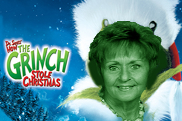
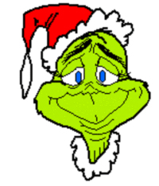
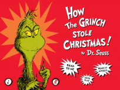
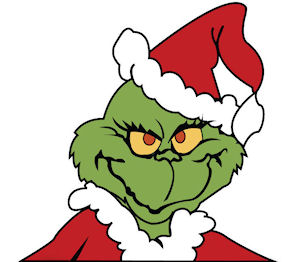
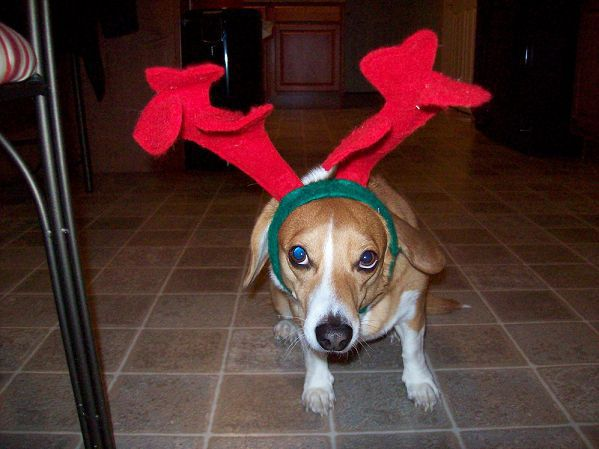

| Turn-a-Grinch | Dear Kelsey,
-Kelsey Cameron
|
||||
|  |
|||||
| The Grinch is a fictional character created by Dr. Seuss. He first appeared as the main protagonist in the 1957 children's book, How the Grinch Stole Christmas!
The devious, anti-holiday spirit of the character has led to the term Grinch coming to refer to a person opposed to Christmas time celebrations[1][2][3] or to someone with a coarse, greedy attitude.[4] In fact, a document in the live-action film (the Book of Who) stated that "The term Grinchy shall apply when Christmas spirit is in short supply". The Grinch has since become an icon of the winter holidays, despite the character's hatred of the season, and has appeared on various forms of memorabilia such as Christmas ornaments, plush dolls, Halloween costumes, and various clothing items. In 2002, TV Guide ranked The Grinch number 5 on its "50 Greatest Cartoon Characters of All Time" list.[5] |
|||||
| Although the animated film and all subsequent visual media depict the Grinch as green with creme colored eyes, in the original Seuss book he, like everything else, is printed in black, white, and shades of red, his appearance is mainly described to look like a giant, green, mutated chimpanzee. He lives in an isolated cave near Whoville, the town in which the original story takes place. His only companion is his faithful dog, Max (a mix breed). He despises the Christmas holiday because his heart is "two sizes too small," and hatches a plan to steal the Whos' Christmas gifts and decorations, an act for which he disguises himself in a Santa suit. |  | ||||
| In the film versions, the Grinch appears to possess a number of superhuman powers. He is able to lift a sleigh loaded with Whoville's entire supply of presents himself, with the strength "of ten Grinches, plus two." |  | ||||
| Though the animated special explains this as the Grinch influenced merely by Christmas spirit and his enlarged heart, the live film alludes to the notion that the Grinch was already incredibly strong. As a child, the Grinch was shown lifting a Christmas tree over his head and throwing it across the room. He also most likely carved out most of his cave with his bare hands, as the entrance was a rock wall when he was a child. The film also presents a number of other powers. |  | ||||
| These include his humanly impossible leaps, inhuman accuracy (shown when throwing letters), horrible breath, and an implied ability to be able to survive in the cold with little or no protection. He was also shown to be able to consume glass and pottery harmlessly, and seemed to very much enjoy consuming these and also apparently made soup from toxic sludge. |  | ||||
| In the live-action film, the Grinch's hatred of Christmas derived from a traumatic childhood memory. As an 8-year-old, most of his classmates made fun of him because of his beard when he tried to shave it to look his best during Christmas Day. The mocking laughter of the classmates made the Grinch so angry that he took out his rage against the classroom, frightening the classmates and declaring his hatred for Christmas before running away to live in the top of the mountain. | |||||